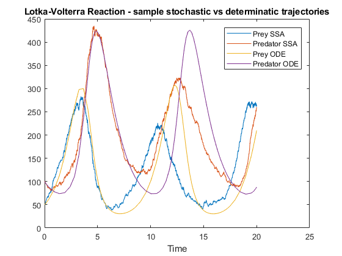
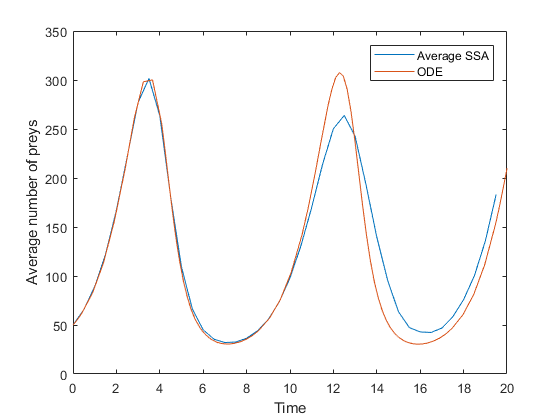

Contents
Demonstration of the Gillespie algorithm
The model consists of two reagents:
- x(1) is the initial number of preys,
- x(2) is the initial number of predators,
and three reactions:
- R1: x(1), x(2) -> x(1)+1, x(2), at rate c1 * x(1)
- R2: x(1), x(2) -> x(1)-1, x(2)+1, at rate c2 * x(1) * x(2)
- R3: x(1), x(2) -> x(1), x(2)-1, at rate c(3) * x(2)
% Set parameters and initial condition c1=1; c2=0.005; c3=0.6; initial_condition = [50, 100]; t_max = 20; % simulate a single stochatic trajectory [t,X] = LV_SSA(initial_condition, c1,c2,c3, t_max); plot(t, X(:,1), t, X(:,2)); legend('Prey SSA', 'Predator SSA'); title('Lotka-Volterra Reaction - sample stochastic vs determinatic trajectories'); xlabel('Time'); % compare with the deterministic solution % see `help ode45` [t1,X1] = ode45(@(t,x) LV_derivative(x,c1,c2,c3), [0,t_max], initial_condition); hold on plot(t1, X1) legend('Prey SSA', 'Predator SSA', 'Prey ODE', 'Predator ODE');
Phase plane
hold off plot(X(:,1), X(:,2)); hold on plot(X1(:,1), X1(:,2)) xlabel('Prey'); ylabel('Predator');
Average behaviour
Use the stepper function to check that the average stochastic trajectory is consistent with the ODE.
% It is convenient to allocate memory for 100 trajectories. dt=0.5; n_steps=t_max/dt; x=zeros(n_steps, 2, 1000); %initialise for j = 1:1000 x(1,:,j) = initial_condition; end %simulate for j = 1:1000 i=0; t=dt; while t < t_max i=i+1; x(i+1,:,j)=LV_SSA_stepper(x(i,:,j), c1,c2,c3, dt); t=t+dt; end end % compare the typical trajactory with the ODE hold off; plot(0:dt:t-dt, mean(x(:,1,:),3)) %plot(linspace(0,t_max, n_steps), mean(x(:,2,:),3)) hold on; plot(t1, X1(:,1)); xlabel('Time'); ylabel("Average number of preys"); legend("Average SSA", "ODE");